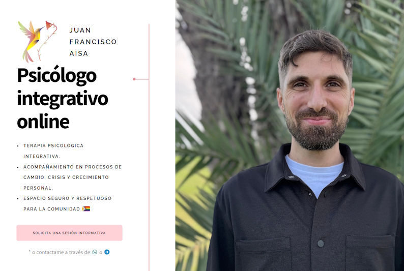
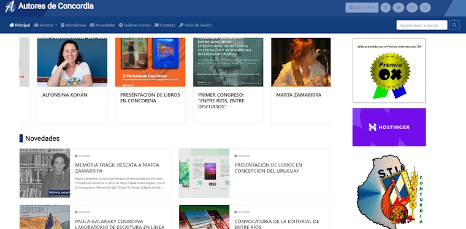
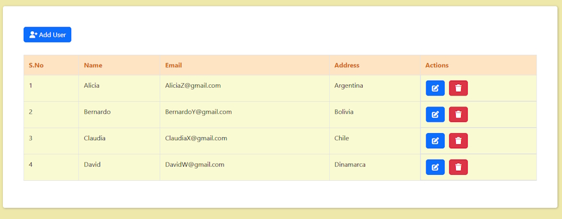

Portafolio
- Diseño y Desarrollo de Sitio Web
Psicólogo Integrativo - Juan Francisco Aisa

- Tecnologias usadas: HTML | CSS | Javascript
- Diseño de interfaz moderna y alineada con la identidad profesional del cliente.
- Comunicación directa con el cliente para definir necesidades, estilo visual y objetivos del sitio.
- Iteración sobre propuestas de diseño priorizando claridad, estética y experiencia de usuario.
- Adaptación del contenido para transmitir confianza y profesionalismo.
- Implementación final optimizada y lista para despliegue.
- Optimización SEO y Mantenimiento Web
Autores de Concordia

- Tecnologias usadas: PHP | HTML
- Auditoría y mejora de posicionamiento en buscadores (SEO).
- Optimización de meta etiquetas y rendimiento general del sitio.
- Corrección de estructura de URLs y redirecciones.
- Soporte en implementación de herramientas de monetización (Adsense).
- Aplicación Web MERN CRUD
Github

- Tecnologias utilizadas: MongoDB | ExpressJs | React | NodeJs
- Desarrollo de aplicación full-stack con operaciones CRUD completas.
- Implementación de API REST para gestión de datos.
- Interfaz dinámica construida con React.
- Gestión de base de datos NoSQL (MongoDB).
- Emulador Chip8
Github

- Tecnologias utilizadas: Visual Studio | C++ | SDL
- Implementación de emulador funcional del sistema CHIP-8.
- Gestión de gráficos y entrada de usuario mediante SDL.
- Desarrollo de lógica de bajo nivel y manejo de memoria.
- Ejecución de ROMs clásicas.